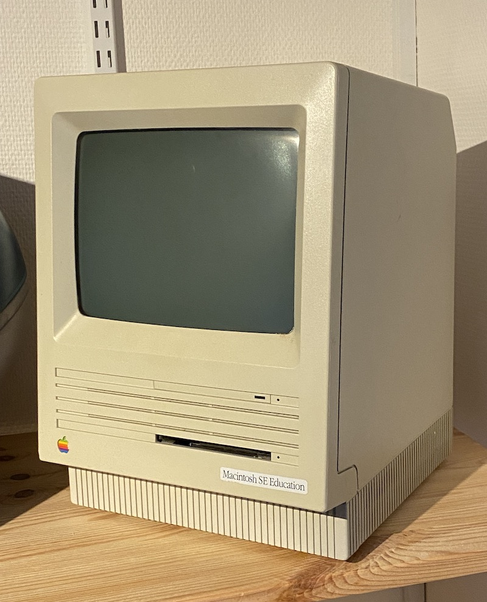

Macintosh SE (1988)
Den første kompakte Mac med en intern harddisk. Denne model er en særlig "Education" udgave. Den blev brugt til at evaluere om at var disse maskiner der skulle indkøbes til de danske skoler.
- Motorola 68000, 8 MHz processor
- 1 MB ram
- 20 MB harddisk
- Diskette-drev
- 9" monochrome skærm
- Vægt: 7,7 kg
Læs mere på Wikipedia
Fortsæt turen
Kig til venstre •
Kig op •
Kig til højre •
Kig ned til højre